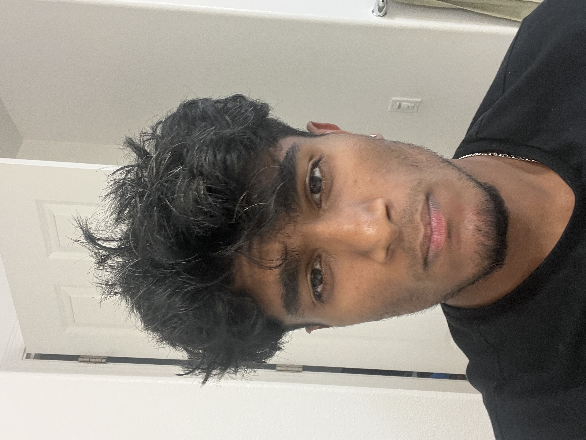

Hello, World!
My name is Nithish Rajan and this is my website.
Education:
University of California, Berkeley
B.A CS + Econ, Expected Graduation 2025
Work Experience
Hyphenova
May 2023 - June 2023
Software Strategy Intern
Los Angeles, CA
- Designed a b2b transaction-based platform for distribution/licensing in UGC platform market using React.js
- Constructed an algorithm to increase content viewership by 50% via fast-searching large data-sets using desired specifiers, and a Machine Learning model trained on viewer watch stats to find optimal times to use surge pricing
- Wrote an algorithm to implement NLP tools using OpenAI and Node.js, creating increasingly personalized content
CS61A: Structure and Interpretation of Computer Programs
August 2022 - May 2023
Teaching Assistant
Berkeley, CA
- Explained OOP concepts in lab and discussion sections for introductory programming course containing 2000+ students
Phi Kappa Tau Fraternity
August 2022 - May 2023
Philanthropy Chair, Housing Manager
Berkeley, CA
- Organized 50+ fraternity members, and handled $30,000 budget; automated old feedback system to prioritize individual reactions rather than prior methodology, leading to platform usage increasing by 37%
- Led stand-up meetings during large-scale philanthropy planning, raised over $10,000 for the Serious Fun Foundation
Memphis Grizzlies
January 2022 - May 2022
Software Engineering Consultant
Berkeley, CA
- Led team of 6 people and created an ML model to predict lineup performance based on offensive/defensive matchups/stats
- Manipulated data set spanning over 50,000 plays using various Python libraries to discover the strongest predictive stat
- Improved lineup-decision efficiency by 60% and found 90% accuracy in predicting fit of a player in a specific lineup